The Map is Not the Territory
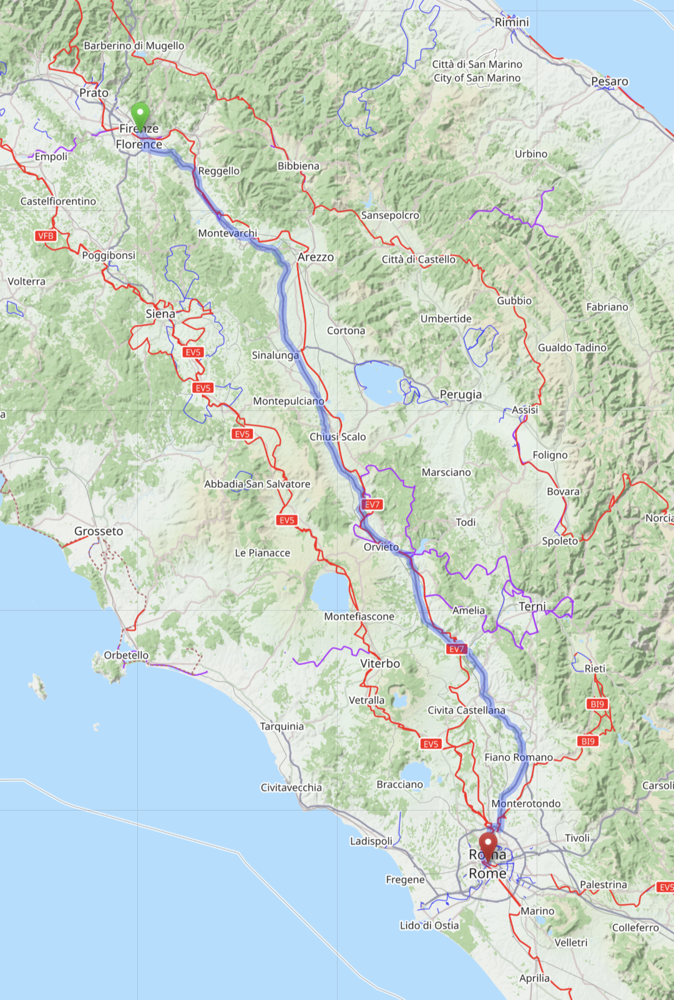
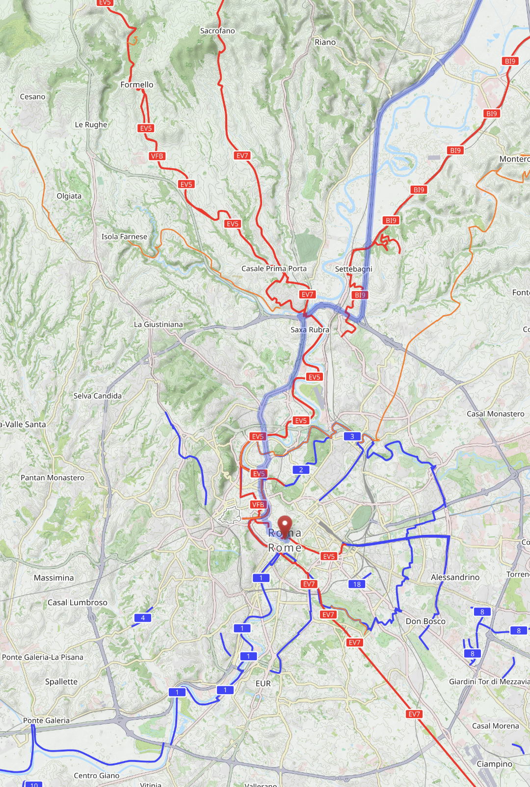

Source: OpenStreetMap & Rome.info
Niklas Lindström, National Library of Sweden | RDF & SPARQL WG
rdf:JSON datatype.
rdf:dirLangString).
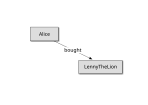
<Alice> :bought <LennyTheLion> .
Forms a logical proposition.
When interpreted, these are the facts of the interpretation.
Expressing circumstantial information, like:
Syntactic support for marginalia/annotations.
<Alice> :bought <LennyTheLion> {| :date "2014-06" |} .
Nodes with properties; edges between nodes.
Edges can have properties too.
(:ALICE) -[:FOUNDED {date: "2014-06"}]-> (:LENNY_THE_LION)
Begun alignment with LPGs ("properties on edges").
<Alice> :bought <LennyTheLion>
{| :date "2014-06" |} .
<Alice :bought <LennyTheLion>
{| :date "2014-12" |} .
equals
<Alice> :bought <LennyTheLion>
{| :date "2014-06" |}
{| :date "2014-12" |} .
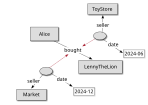
<Florens> :connectedTo <Rome>
{| a :Route ;
:road <A1> ;
:distance "276"^^:KM |}
{| a :Route ;
:road <RaccordoAutostradaleFirenze-Siena-A1> ;
:distance "309"^^:KM |} .


Source: OpenStreetMap & Rome.info
[] rdf:reifies <<( <Alice> :bought <LennyTheLion> )>> .
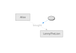
Triples are now allowed as objects in other triples, alongside IRIs, bnodes and literals.
Triples denote abstract logical propositions.
(Cf. how literals denote values.)
A triple denotes an rdfs:Proposition.
If the triple is in the graph, it encodes a fact in the interpretation.
(Transparent semantics. A "use", not a "mention"@en.)
A reifier is anything relating to a proposition using rdf:reifies.
The reifier can be a token of data, an event, circumstance, situation, context, ...
rdf:Statement "tokens of triples"; now conceptually a subset of new-style reifiers)
<Alice> :bought <LennyTheLion> {| a rdfs:Resource |} .
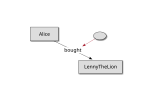
Expands to:
<Alice> :bought <LennyTheLion> .
[] a rdfs:Resource ;
rdf:reifies <<( <Alice> :bought <LennyTheLion> )>> .
<< :TheEarth :revolvesAround :TheSun >> a :Statement ; :source :Galileo ; :date 1610 .
Expands to:
[] a :Statement ;
rdf:reifies <<( :TheEarth :revolvesAround :TheSun )>> ;
:source :Galileo ;
:date 1610 .
<< <Alice> :bought <LennyTheLion> ~ <r1> >> . <r1> a :Transaction .
<Alice> :bought <LennyTheLion> ~ <r2> .
<r2> a :Purchase .
The type of the reifier determines its nature (may be implied by predicates).
Fact: The earth revolves around the sun. [1] [2] [3]
:TheEarth :revolvesAround :TheSun ~ <#1> ~ <#2> ~ <#3> . <#1> a :Statement ; :source :Galileo ; :date 1610 . <#2> a :DogmaticDenial ; :source :ChurchOfOld ; :date 1633 . <#3> a :ReferenceFrame ; :gravitationalSystemBoundary "..." .
<Alice> :bought <LennyTheLion> {| a :Transaction ; :source :TXZ ; :tstamp "0x66e" |} .
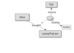
<Alice> :bought <LennyTheLion> {| a :Purchase ; :seller <ToyStore> ; :date "2024-06" |} .
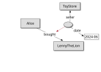
<Alice> :bought <LennyTheLion> {| a :Purchase ; :seller <ToyStore> ; :date "2024-06" |} {| a :Purchase ; :seller :Market ; :date "2024-12" |} .
<Q59166653> a :Person ;
:name "Malgorzata Domino"@en ;
:alumniOf <Q681>
{| :academicDegree <Q1862897> ;
:startDate "2005-10-01" ;
:endDate "2011-02-28" |}
{| :academicDegree <Q950900>
:startDate "2011-10-01" ;
:endDate "2012-11-08" |}
{| :academicDegree <Q752297>
:startDate "2011-03-08" ;
:endDate "2015-04-22" |} .
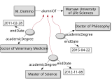
<OnTheStateOfThings> a :Text ; :author <Alice> ; :dateCreated "2025-05-20". <Alice> a :Person ; :affiliation <HardknockSchool> .
<OnTheStateOfThings> a :Text ;
:contribution [ a :Contribution ;
:agent <Alice> ;
:affiliation <HardknockSchool> ;
:date "2025-05-20" ] .
<Alice> a :Person .
<OnTheStateOfThings> a :Text ; :author <Alice> {| :affiliation <HardknockSchool> |} ; :dateCreated "2025-05-20". <Alice> a :Person .
<Alice> a :Person ; :affiliation <HardknockSchool> ~ <ctb1> , <TranscendentUniversity> ~ <ctb2> . <OnTheStateOfThings> a :Text ; :author <Alice> ~ <ctb1> . <OnTheChangeOfPatterns> a :Text ; :author <Alice> ~ <ctb2> , <Lenny> ~ <ctb2> .
<ctb1> a :Contribution ; :date "2025-05-20". <ctb2> a :Contribution ; :date "2036-10-17".
Use cases show reifiers of varying type, granularity and scope.
Examples include:
Different modelling choices lead to different perspectives.
In many cases singular triples need to be reified.
But some may be of multiple triples at once.
A simple example is the different models of person names.
Some define just name. Others, givenName and familyName. Etc.
A NameRecord may thus reify a single or multiple triples, depending on the modelling choice.
GRAPH <model-1> { <Alice> :name "Alice Liddell" ~ <nrx> . <nrx> a :NameRecord ; :date "1852" . }
GRAPH <model-2> { <Alice> :givenName "Alice" ~ <nrx> ; :familyName "Liddell" ~ <nrx> . <nrx> a :NameRecord ; :date "1852" . }
Previously, a bought relationsip was qualified as a Purchase with a seller.
But if the intial data was simpler (or more "naive"), a sold relation might have been used. What then?
<Alice> :bought <LennyTheLion> ~ _:r1 . <ToyStore> :sold <LennyTheLion> ~ _:r1 . _:r1 a :Purchase ; :date "2024-06".
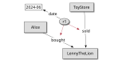
_:r1 a :Purchase ; :buyer <Alice> ; :seller <ToyStore> ; :item <LennyTheLion> ; :date "2024-06".
www.w3.org/TR/swbp-n-aryRelations
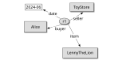
:bought owl:propertyChainAxiom ([owl:inverseOf :buyer] :item) . :sold owl:propertyChainAxiom ([owl:inverseOf :seller] :item) .
If you can afford to use OWL...
(If that's interesting, there may be a two-way path through basic encoding. (Watch this space.))
Different use cases:
Provenance from inside (the interpretation) or outside (the set).
Named graphs do not nest.
If you manage data in named graphs, you will also want to manage descriptions about reifiers in named graphs.
There are no defined semantics for datasets.
The name does not (necessarily) denote the graph (set of triples).
A dataset is one default graph and a set of name, graph pairs.
(Where the names are unique. And a graph is a set of triples.)
(Note also that a set of one triple is not a proposition.)
<Alice> :bought
<LennyTheLion> ~ _:r1 .
:ToyStore :sold
<LennyTheLion> ~ _:r1 .
_:r1 a :Purchase ;
:date "2024-06".
<Alice> :knows <Lenny>, <Bob> .
<Alice> :knows <Lenny> . <Alice> :knows <Bob> .
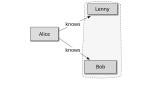
<Alice> :bought
<LennyTheLion> ~ _:r1 .
:ToyStore :sold
<LennyTheLion> ~ _:r1 .
_:r1 a :Purchase ;
:date "2024-06".
<<( :s :p :o )>>.
rdf:reifies.
:s :p :o {| a :Q |} . | :s :p :o ~ :r .
<< s :p :o >> a :Q . | << s :p :o ~ :r >> .
rdf:types, for qualification and provenance:
rdf:Statement,
prov:Attribution,
sdo:Role,
bf:Publication,
bf:Contribution...